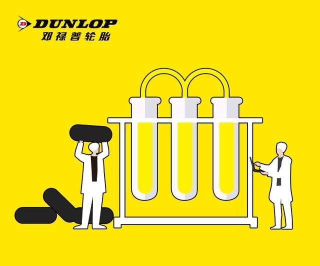

您当前的位置：首页 > 新闻
住友橡胶最新研发成果，稳踞行业科技前沿
发布时间：2020-04-14来源：环保网
近日，住友橡胶工业株式会社正式宣布，新型"低气味天然橡胶"技术研发成功。该技术通过抑制天然橡胶原材料中引|发气味的非橡胶成分(例如蛋白质和脂类)的分解，大幅降低了天然橡胶散发出的气气味。目前，住友橡胶集团在泰国的天然橡胶加工厂已引入该项技术。

开创全新橡胶技术，解决气味难题
现如今，全球约有70%的天然橡胶被用于轮胎生产，住友橡胶作为全球知名轮胎企业，始终秉承着对地球环境负责的态度进行研发生产，此次"低气味天然橡胶"技术代表着企业在解决天然橡胶气味这一难题上，迈出了重要一步，并为天然橡胶加工厂和轮胎企业，带来了全新的解决方案。
关注环保，缔造安心
住友橡胶从未停止探寻轮胎科技的研发脚步，旨在努力改善天然橡胶性能，为消费者提供更高品质、更安心的轮胎产品。同时还期望通过最大程度利用生物材料等，来满足社会出行与环境保护的双重需求，竭力创建与自然和谐发展的"地域共生企业"。
众所周知，轮胎的性能关乎安全性及驾乘乐趣等方面，而天然橡胶约占轮胎原材料总重量的30%，这更加说明天然橡胶品质的重要性。因此，针对天然橡胶使用中的各种问题，住友橡胶一直积极努力地致力于研发创新性解决方案，为实现可持续发展的社会出行做出重要贡献。
关键字词：爱情,犯错,原谅,分手